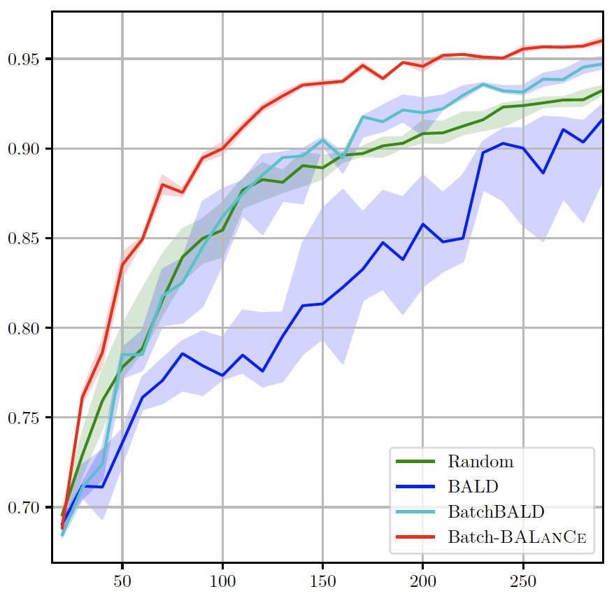
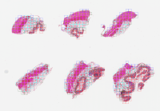
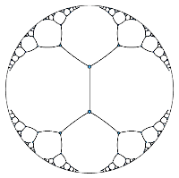

|
Renyu Zhang
I am a graduate student from the University of Chicago. My primary research interest lies in the intersection between healthcare and machine learning. I am particularly interested in medical imaging and scRNA seq.
My advisor is Robert Grossman and I also work closely with Aly Khan and Yuxin Chen.
I got my bachelor degree from Shandong University and master degree from the Institute of Computing Technology of the Chinese Academy of Sciences.
Email /
Google Scholar /
GitHub
|
|
|
Research
Selected publications
|
|

|
BALanCe: Deep Bayesian Active Learning via Equivalence Class Annealing
Renyu Zhang, Aly Khan, Robert Grossman, Yuxin Chen
International Conference on Learning Representations (ICLR), 2023
Active learning has demonstrated data efficiency in many fields.
Existing active learning algorithms, especially in the context of batch-mode deep Bayesian active models, rely heavily on the quality of uncertainty estimations of the model, and are often challenging to scale to large batches.
In this paper, we propose Batch-BALanCe, a scalable batch-mode active learning algorithm, which combines insights from decision-theoretic active learning, combinatorial information measure, and diversity sampling.
At its core, Batch-BALanCe relies on a novel decision-theoretic acquisition function that facilitates differentiation among different equivalence classes.
Intuitively, each equivalence class consists of hypotheses (e.g., posterior samples of deep neural networks) with similar predictions, and Batch-BALanCe adaptively adjusts the size of the equivalence classes as learning progresses.
|
|

|
Evaluating and interpreting caption prediction for histopathology images
Renyu Zhang, Christopher Weber, Robert Grossman, Aly Khan
Machine Learning for Healthcare Conference (MLHC), 2020
poster / bibtex
We introduce PathCap, a deep learning multi-scale framework, to predict captions from histopathology images using multi-scale views of whole-slide images.
We demonstrate that our framework outperforms a standard baseline caption model on a diverse set of human tissues and provides interpretable contextual cues for understanding predicted captions.
Finally, we draw attention to a novel dataset of histopathology images with captions from the Genotype-Tissue Expression (GTEx) project,
providing a valuable dataset for the machine learning and healthcare community to benchmark future caption prediction and interpretation methods.
|
|

|
Evaluation of Hyperbolic Attention in Histopathology Images
Renyu Zhang, Aly Khan, Robert Grossman
The 20th IEEE International Conference on BioInformatics And BioEngineering (BIBE), 2020
We bring together into a common framework three key ideas — multi-scale medical image analysis, the attention mechanism, and hyperbolic embeddings.
|
|
|
H&E Image-based Consensus Molecular Subtype Classification of Colorectal Cancer Using Weak Labeling
Andrew J. Kruger, Lingdao Sha, Madhavi Kannan, Rohan P. Joshi, Benjamin D. Leibowitz, Renyu Zhang, Aly A. Khan, Martin Stumpe
ASCO Annual Meeting, 2020
bibtex
We implemented and trained a novel deep multiple instance learning (MIL) framework that requires only a single label per WSI to identify morphological biomarkers and accelerate CMS classification.
|
|
{kind=link}